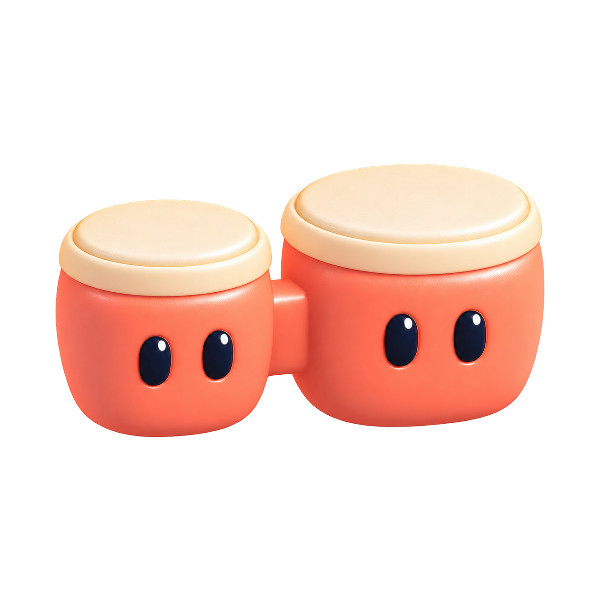
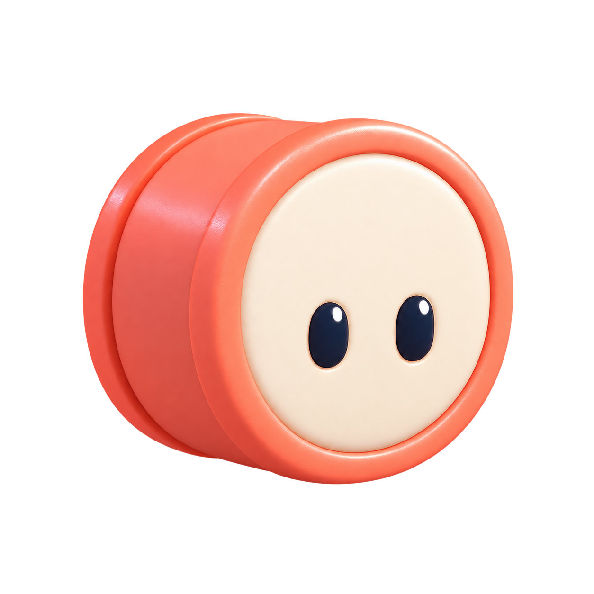
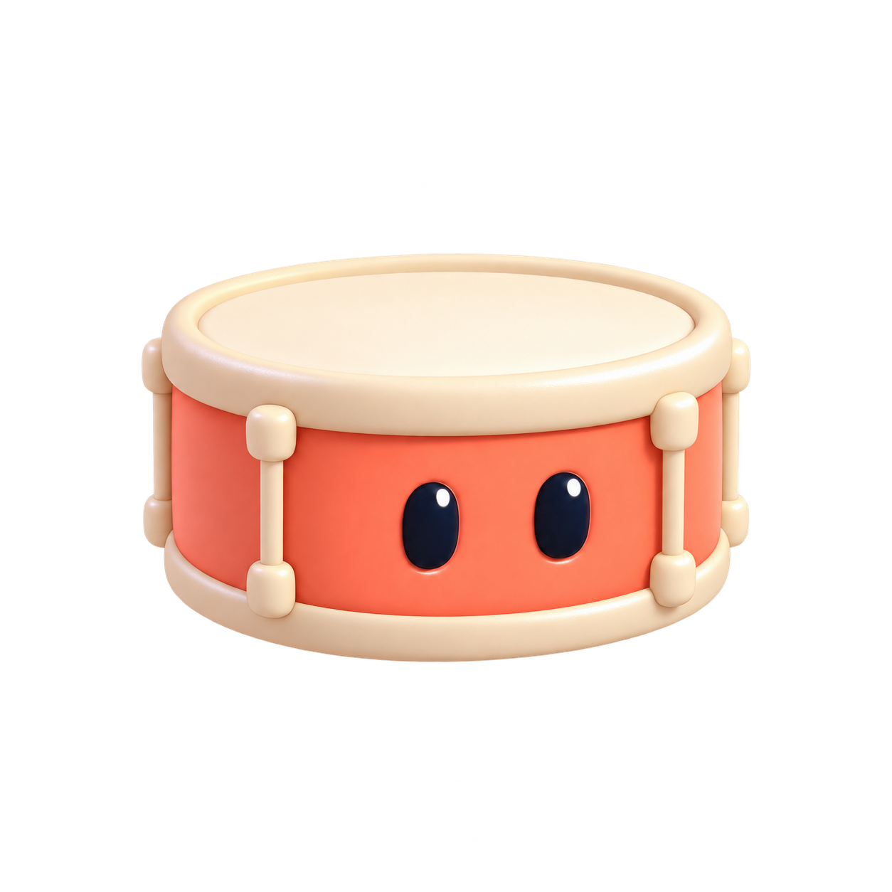
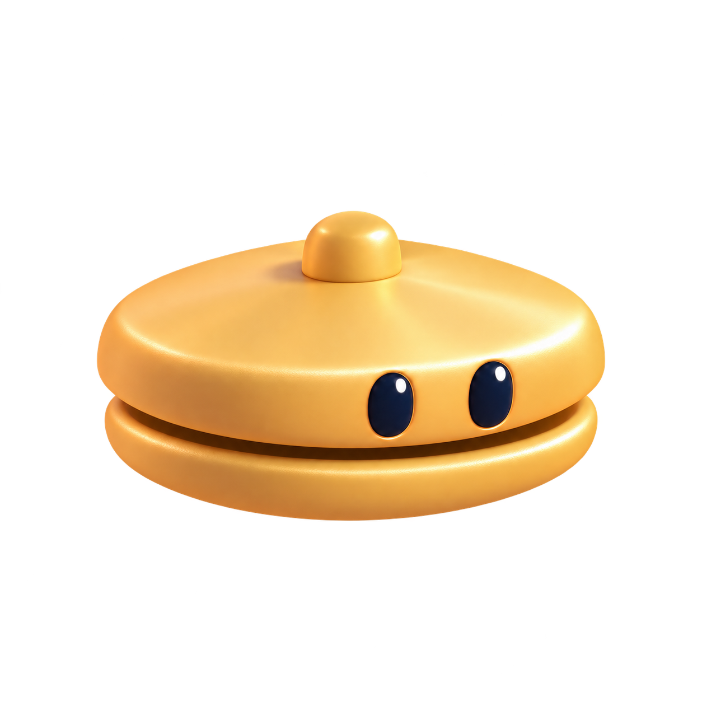

Just the bongos
High and low drums answering each other.
Percussion shelf
Bongos for character. A kick for weight. A snare for the backbeat. A closed hi-hat to keep things moving.




Two four-bar sketches at 100 BPM. Play starts when you choose. No effects added.
High and low drums answering each other.
Five core voices, with quieter hats and room to breathe.
Two takes for each voice. Originals are preserved for comparison. The open hat is an optional extra.
A warm, bright tap for answering phrases.
VCSL · CC0A rounder hand-drum voice to pair with the high tap.
VCSL · CC0Low weight for the main pulse.
Virtuosity Drums · CC0A short crack for the backbeat.
Virtuosity Drums · CC0A quiet metallic tick for the spaces between hits.
VCSL · CC0Optional: a longer accent, reserved for later.
VCSL · CC0Ten core WAVs and two optional open-hat WAVs. Bongos and hats come from VCSL; the close-miked kick and snare come from Virtuosity Drums. Both audio sources are CC0.
Attack silence was aligned, very quiet ends were trimmed, and levels were matched within each voice. Hats sit below drums. Lengths differ naturally. The snare takes are adjacent source velocity layers, rather than two true round robins. Artwork was generated to match the existing Bongo Planet toy style.
The five core percussion voices are now in the Bongo Planet instrument picker, with natural-pitch playback and matching 3D characters. This shelf preserves the original PNG artwork, source recordings, and offline audio sketches. The open hat remains an optional research asset.